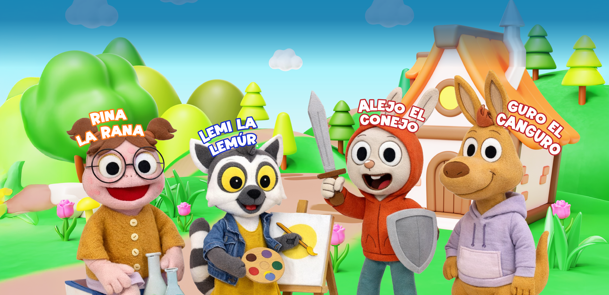
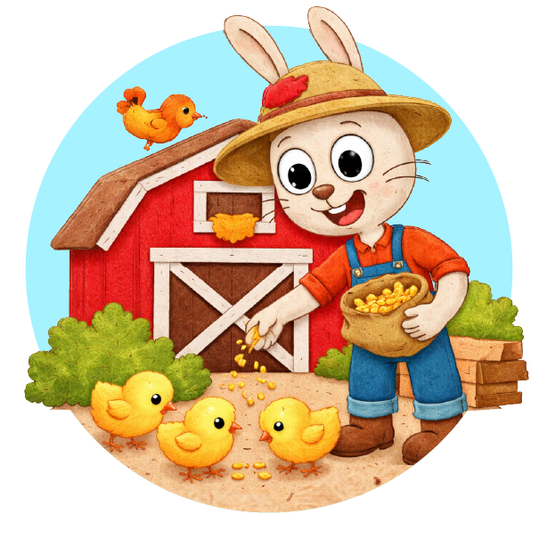
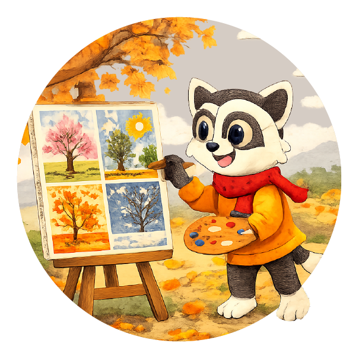

Aprender en compañía
Talleres en vivo con una educadora para compartir, expresarse y descubrir.
Talleres online, historias y actividades que despiertan la curiosidad. Un mundo por descubrir para niños y niñas de 3 a 7 años.

Acompañamos su curiosidad con experiencias pensadas para su etapa, junto a educadoras y personajes que les encantarán.
Talleres en vivo con una educadora para compartir, expresarse y descubrir.
Videos con títeres y cápsulas interactivas que convierten cada historia en una aventura.
Más de 200 actividades para imprimir y llevar la diversión más allá de la pantalla.
Todos los talleres por $40.000 CLP / mes
Granjas, planetas y mundos llenos de color. Explora algunas de las temáticas de nuestro calendario.


Conoce el club y encuentra un mundo de posibilidades para tu peque.
¡Nos vemos en JOPI! →¿Tienes preguntas? Conversemos por WhatsApp →Para niños y niñas de 3 a 7 años. Cada taller indica la edad recomendada para que encuentres el más adecuado para tu peque.
Acceso a todos los talleres por $40.000 CLP mensuales. El club también cuenta con videos con títeres, cápsulas interactivas y actividades para imprimir. Consulta los detalles del plan al inscribirte.
Los talleres son online, junto a una educadora. Inscríbete y accede desde “Mi plataforma”. Si necesitas orientación, escríbenos por WhatsApp.